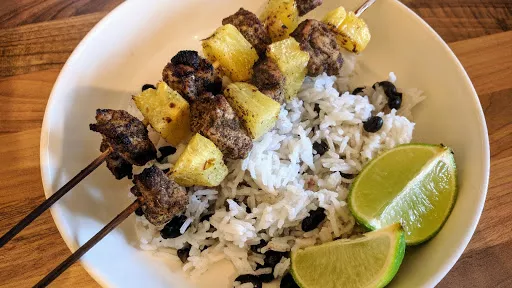

Jerk pork & pineapple skewers with black beans & rice
20 mins
Serves 4

Pop these healthy kebabs on a griddle or the BBQ - they're packed with Creole spices and are a lean treat.
Ingredients
400 g pork fillet, cut into 4 cm chunks
2 tbsp jerk or Creole seasoning
1 tsp ground allspice
1 tbsp hot chilli sauce, plus extra to serve (optional)
3 limes, zest and juice 1 other 2 cut into wedges to serve
½ small pineapple, peeled cored and cut into 4cm chunks
1 tbsp vegetable oil
200 g basmati rice
400 g can black beans, drained and rinsed
Instructions
Mix together the pork, jerk seasoning, allspice, chilli sauce, if using, lime zest and juice, and some seasoning. Thread the pork and pineapple onto metal skewers (or pre-soaked wooden skewers) and brush with the oil.
Cook rice following pack instructions. Drain well, then put back in the saucepan with the beans, stir and keep warm.
Meanwhile, heat a griddle pan until very hot. Cook the skewers for 3 mins on each side until nicely charred and the pork is cooked through. Serve skewers with the beans and rice, extra chilli sauce, if you like, and lime wedges for squeezing over.